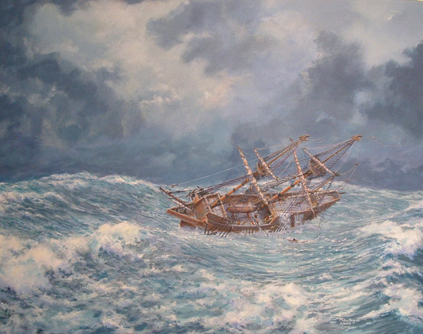
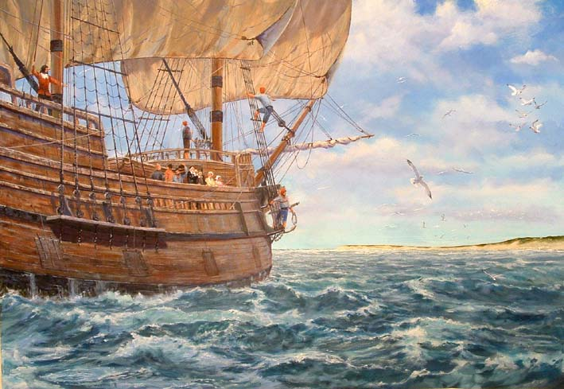
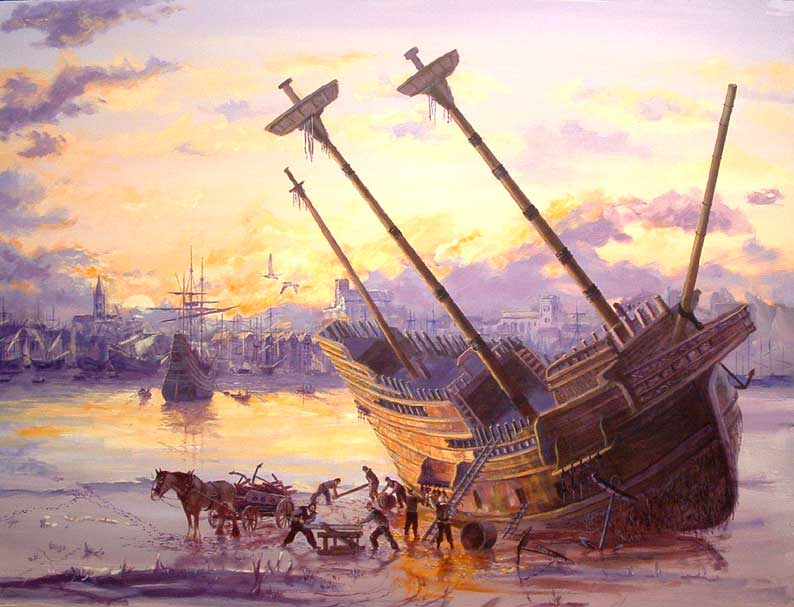

The following narratives chronicle four pivotal moments of the Mayflower's 1620 voyage — told through the eyes of those who lived it, drawing on the firsthand account of Governor William Bradford. Accompanying paintings are the work of marine artist Mike Haywood of Cornwall, United Kingdom.

The Mayflower Battered by Mountainous Seas and Gale Force Winds

Mike Haywood, Cornwall, UK
In 1620, fierce Atlantic storms pounded the tiny Mayflower relentlessly. Captain Jones was forced to take in every stitch of canvas and leave the vessel to drift helplessly like a piece of flotsam. The passengers endured the fetid, overcrowded conditions below decks in utter misery — seawater had soaked their bedding and clothing for weeks on end.
One of the main beams amidships bowed and cracked under the strain, raising fears that the ship could not complete the voyage. Remarkably, it held. Governor William Bradford recorded the ordeal in his own words:
…and met with many fierce storms, with which the ship was shroudly shaken, and her upper works made very leaky; and one of the main beams in the mid ships was bowed and cracked, which put them in some fear that the ship could not be able to perform the voyage. In sundry of these storms the winds were so fierce, and the seas so high, as they could not bear a knot of sail, but were forced to hull, for divers days together.
— William Bradford, Of Plymouth Plantation
Mayflower Drowning Man Shapes the Course of American History

Mike Haywood, Cornwall, UK
In mid-Atlantic, another disaster struck the storm-tossed Mayflower. A servant named John Howland was swept overboard by a mountainous wave — and then, miraculously, rescued. He caught hold of the topsail halyards hanging over the side and clung on, even as the ropes dragged him fathoms beneath the surface. He was hauled back up by the rope and brought aboard with a boat hook.
John Howland went on to become the thirteenth signatory of the Mayflower Compact and was present at the first Thanksgiving. He and his wife Elizabeth Tilley had ten children and eighty-two grandchildren. Had he lost his grip that day, the course of American history would have changed: among his direct descendants are Presidents George H.W. Bush and George W. Bush, President Franklin D. Roosevelt, and Humphrey Bogart.
…in a mighty storm, a lusty young man (called John Howland) coming upon some occasion above the gratings, was, with a seele of the ship thrown in the sea; but it pleased God that he caught hold of the top-sail halyards, which hung over board, and ran out at length; yet he held his hold (though he was sundrie fathomes under water) till he was hald up by the same rope to the brime of the water, and then with a boat hook and other means got into the ship again, and his life saved; and though he was something ill with it, yet he lived many years after, and became a profitable member both in church and common wealth.
— William Bradford, Of Plymouth Plantation
Mayflower Almost Shipwrecked Off Cape Cod

Mike Haywood, Cornwall, UK
On November 9, 1620, the Mayflower's crew sighted Cape Cod and attempted to sail south toward the mouth of the Hudson River — their original destination near modern-day Long Island, New York. The weather was fine, but they were caught in a dangerous riptide and nearly shipwrecked on the shallow sandbars south of the Cape at Monomoy Point. Bradford described the terrifying moment of decision:
After some deliberation had amongst them selves and with the master of the ship, they tacked about and resolved to stand for the southward (the wind and weather being faire) to find some place about Hudson's River for their habitation. But after they had sailed that course about half the day, they fell amongst dangerous should and roaring breakers, and they were so far entangled there with as they conceived them selves in great danger; and the wind shrinking upon them withal, they resolved to bear up again for the Cape, and thought themselves happy to get out of those dangers before night overtook them, as by God's providence they did.
— William Bradford, Of Plymouth Plantation
The Mayflower anchored off what is now Provincetown Harbor on November 11, and over the following month sent out several expeditions to survey Cape Cod and the surrounding coast before finally landing at Plymouth.
Of the 102 passengers, only one died during the voyage itself — along with one crewman. Yet within six months of landing, no fewer than 52 passengers perished in an epidemic, including 14 of 18 wives and 13 of 24 husbands. Remarkably, the survivors resolved to remain.
The End of the Mayflower

Mike Haywood, Cornwall, UK
On April 5, 1621, the Mayflower set sail for England, arriving on May 6 with news of the successful establishment of Plymouth — but bearing the devastating toll of fifty percent of the Pilgrims having lost their lives, and carrying no profitable cargo of lumber, furs, or fish.
The Mayflower then sailed to France, bringing back a cargo of salt. Shortly after, her master and quarter-owner Captain Christopher Jones fell gravely ill. He died in March 1623. By 1624, the Mayflower was sitting in ruins on the River Thames, appraised at a mere £128 — including five anchors, a worn suit of sails, an old pitch pot, and a kettle. The ship was likely sold off as scrap lumber.
In 1920, J. Rendal Harris claimed to have discovered Mayflower timbers in a medieval barn at Jordans, 25 miles northwest of London. Despite a complete absence of supporting documentation, this theory found its way into National Geographic and even onto Jeopardy. The evidence, however, points almost certainly elsewhere — it is not the Mayflower.
About the Artist: The paintings accompanying these narratives are the work of Mike Haywood of Cornwall, United Kingdom, a painter of marine subjects. His full portfolio can be found at www.mikehaywoodart.co.uk . We are grateful for his vivid depictions of these historic moments.